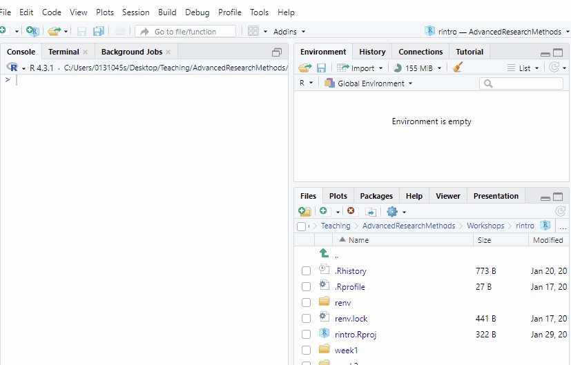
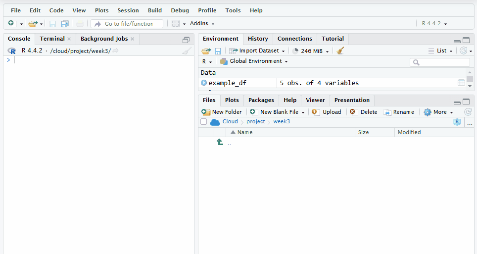
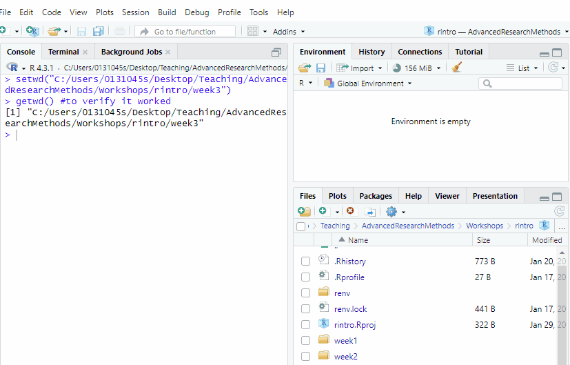
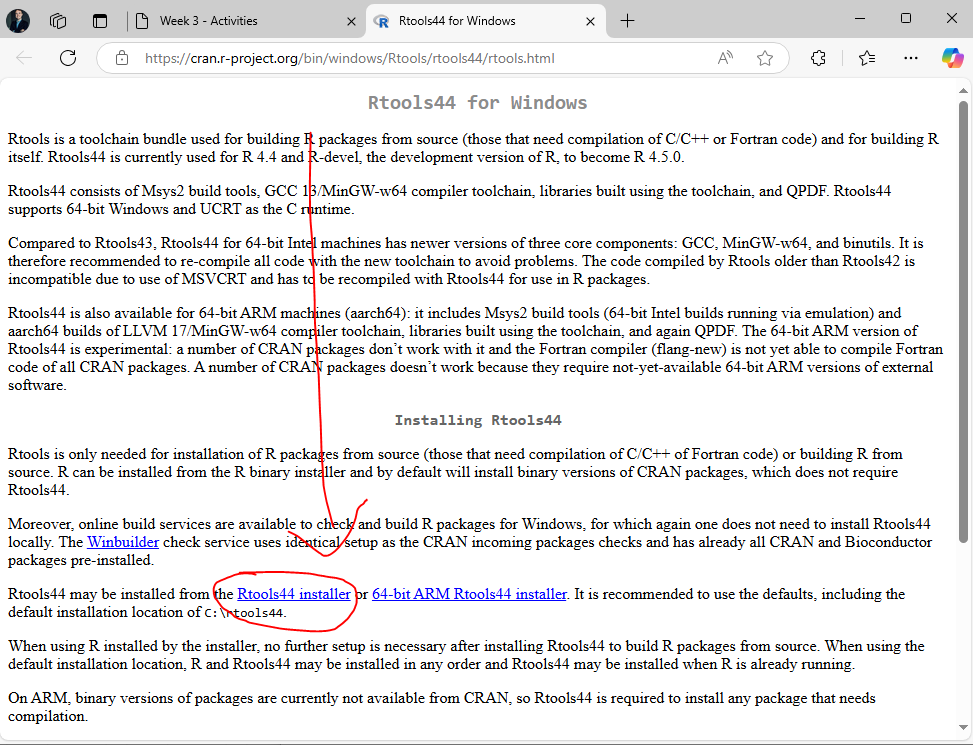
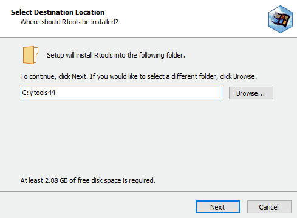
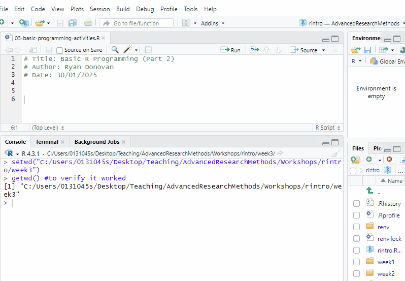
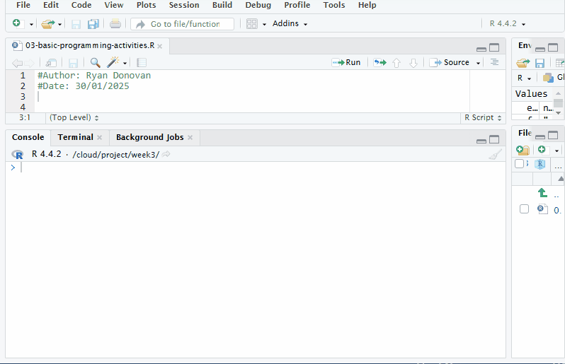
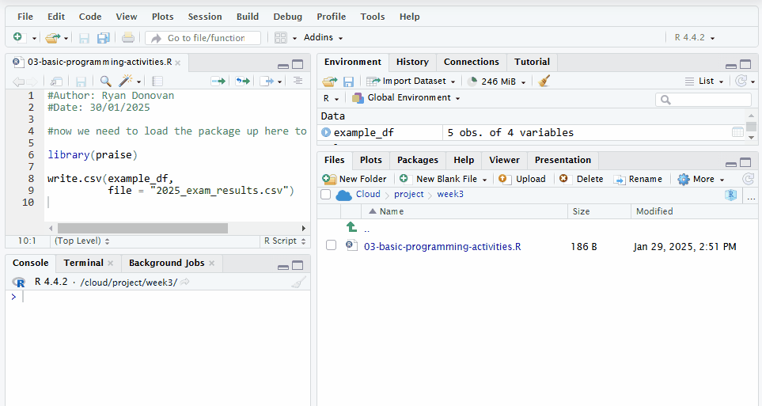

setwd("C:/Users/0131045s/Desktop/PS6183/rintro/week3")Week 3 - Activities
Programming Fundamentals in R (Part 2) Workshop
In this week’s workshop, we are going to learn how to install and load R packages, import and export data, work with data frames, and create functions. Again there is a lot here, so do not worry if you don’t get everything done in the session, or if takes a while for certain concepts to click.
Each activity includes a summary of the key points to help you understand the concepts and techniques. If you get stuck on an exercise, take a moment to review the key points in the activity—it might give you the clarity you need to move forward.
Don’t hesitate to collaborate! Feel free to chat with your neighbours and help each other out. Myself, Ciara, and Aoife will also be around to provide support, so don’t hesitate to ask us for help.
Activity 1: Set up your Working Directory
One of the first steps in each of these workshops is setting up your working directory. If you remember from the last two weeks, a directory is simply another word for a folder. The working directory is the default folder where R will look to import files or save any files you export.
If you don’t set the working directory, R might not be able to locate the files you need (e.g., when importing a dataset) or you might not know where your exported files have been saved. Setting the working directory beforehand ensures that everything is in the right place and avoids that issue.
Steps to Set Up Your Working Directory
Click:
Session → Set Working Directory → Choose DirectoryNavigate to the folder you created for this course (this should be the same folder where you created
week1andweek2).Create a new folder called
week3inside this directory.Select the
week3folder and click Open.
You should now see a message in the console confirming the change.

Verify Your Working Directory
You can always check your current working directory by typing in the following command in the console
# Check if the working directory is set correctly
getwd()If the output does not match the expected directory path, repeat the steps above.
Activity 2: Download the psycho.csv and burnout.csv datasets and move them to your working directory
We will importing two datasets - psycho.csv and burnout.csv - later on in the activities. Whenever you are importing datasets, make sure they are in your working directory, so that R will be able to find them easily.
To do this follow these steps.
Go to Canvas Course Page -> Go to Modules -> Download
psycho.csvandburnout.csvto your computer.If you are using your own laptop, move the two files to your
week3folder you just created.If you are using Posit Cloud, you will need to upload the files to your
week3folder. To do that, go to the Files pane in the bottom right corner of PositCloud, double click theweek3folder, and then click theUploadbutton. Upload bothpsycho.csvandburnout.csv

You should be able to see both files now in your working directory. To check if the files are in the correct location, you can write out the following code in the console, which will list out all the files that are currently in your working directory.
# Check if the files are in the correct location
list.files()If the file names psycho.csv and burnout.csv do not appear in the output, check your working directory setup and try again.
Activity 3: Set up your R Script
Create the R script where you will be writing most of your code today.
Creating an R Script in RStudio
Follow these steps to create a new R script:
Go to the menu bar and select:
File → New File → R Script
This will open an untitled R script.To save and name your script, select:
File → Save As, then enter the name:
03-basic-programming-activities
Click Save.
Faster Way to Create an R Script
Keyboard Shortcut Tip
There’s a faster way to do this in RStudio on your laptop using your keyboard.
Create a new script (local version of RStudio):
Windows: Press
Control + Shift + NMac: Press
Command + Shift + N
If you are using PositCloud, then the keyboard commands to create a new script are slightly different
Create a new script (Posit Cloud):
Windows: Press
Control + Alt + Shift + NMac: Press
⌘ + Shift + Option + N
Save your script (works on both local version or Posit Cloud):
Windows: Press
Control + SMac: Press
Command + S
Add Comments to Your Script
To make your script organised and easy to understand, use comments (#) to include a title and author information at the top of your file.
# Title: Basic Programming Activities (Part 2)
# Author: [Your Name]
# Date: [Today's Date]
For the rest of the activities, make sure to write your code in the R script unless told otherwise. Keep your code neat by using spacing between lines of code and commenting. I recommend to make a comment to highlight each new activity. For example:
## Activity 6: Dataframes
#E1
#[replace this comment with your code]
#E2
#[replace this comment with your code]Activity 4: Install and Load R Packages
What are R packages?
R packages are add-ons that extend the functionality of R. They often contain:
Functions: Special tools to make tasks easier (e.g., functions to visualise data or run statistical tests).
Datasets: Pre-loaded data that you can use for practice.
Documentation: Guides on how to use the package.
R packages are created by people in the R community and shared for free. They’re often designed to solve specific problems, such as making a statistical test easier to run or creating beautiful graphs. By using R packages, you benefit from the hard work and expertise of others — in a sense, you’re standing on the shoulders of R giants.
What you need to do before you can access R packages
Before installing some packages, Windows users need to install RTools. These are necessary to install certain packages that require compiling code.
Note: If you are using a Mac or using Posit Cloud, you do not need to complete this step. Feel free to move onto the next section
Instructions for Window Users
Windows Users - Install RTools
RTools is a collection of software tools for Windows that allows R users to compile packages from source. Some R packages include C, C++, or Fortran code that must be compiled before they can be installed. Since Windows does not come with built-in tools for compiling code, RTools provides the necessary compilers and libraries.
How to Install RTools on Windows
Download RTools
Click the following link: CRAN RTools
Click the hyperlink called
Rtools44 installer
The link you need to click on the Rtools page The installer should start downloading and will take a few seconds to complete.
Install RTools
Run the installer and follow the setup instructions.
Keep the default options ticked
Leave it run, it may need 3-4 minutes to complete

Installation process. I cut out some images from this, it was not that quick!
Once that process is finished you should be able to download R packages. If you run into any errors, please let us know.
Installing and Loading R packages
How do you install R packages?
We always install packages in the console rather than the script. To install packages, we follow this syntax:
install.packages("package_name")Make sure that whenever you install packages, you put the name of the package in quotation marks. Otherwise, R will not install the package.
You can also install multiple packages at once:
install.packages(c("package1", "package2", "package3"))Once you have installed a package within a project, you will not need to install it again for that project.
How do you load R packages?
Every time you close and then reopen an RStudio or Posit Cloud project, you will need to load R packages before you can use them. This is similarly to how every time you want to use an application on your phone, you need to open it up first.
We load our packages in our R script. And we can only load a package once it has been installed. To load a package, we follow this code syntax. Note you do not need to put the package name in quotation marks.
library(package_name)Unfortunately, we cannot load more than one package at a time. So we need a new line of code for each package we load.
library(package1)
library(package2)
library(package3)Installing and Loading the praise package
Depending on the device or application (e.g. Posit Cloud) you are installing it on, you might get a different message when you install the package. There are a couple of things to watch out for:
If you are asked on the console “Do you want to proceed? [Y/n]:”, make sure to type
yorYto initiate the installation.Sometimes a pop up window might appear recommending that you restart R. You can usually say no to this.
Installing an R package on my computer (example)
Here is an example of me installing an R package on my computer.

Installing an R package on PositCloud (example)
Here is an example of me installing the R package on PositCloud.

Exercises
- Install the package
jmvin the R console using the following command. (Note - you will see a lot of red text, that’s okay).
# Run this in the console, not in your script
install.packages("jmv")Install the package
pwrin the R console.Load the package
jmvin your R script using the following commmand.
library(jmv)Load the package
pwrin your R script.Install and load the
praisepackage. If you get stuck, follow the example just before the exercises.Try the
praise()function out by typingpraise()in the console and press enter.
praise()
Troubleshooting Common Issues when Installing and Loading packages
Troubleshooting Common Issues
The following errors might appear when you try to install and load a package. If you are unable to resolve the issue, please ask for help.
- Error: “There is no package called…”
This means the package hasn’t been installed. Make sure to use install.packages("package_name") to install it. Make sure that the package name is spelled correctly and that you have used quotation marks when you installed.
- Error: “Package was built under a different version of R”
This is a warning that your version of R might be out of data. Usually it can be ignored, but if you are unable to use the package, then you will need to download the latest version of R (using the same steps we used to download it in Chapter 2!).
- Dependencies Missing:
If you see a message about missing dependencies, install the package again in the console with the following line of code:
install.packages("package_name", dependencies = TRUE) #make sure to replace package name with the name of the packageActivity 5: Import Data
The majority of the data you’ll work with in R will come from external sources. Therefore, it’s essential to know how to import data into R. Luckily, the process is straightforward.
Make sure to complete Activity 2 first
Prerequisites
Make sure that you have completed activity 2 before doing this activity, as you will download the files psycho.csv and burnout.csv onto your computer and moved the files to your working directory (week3 folder) for the following code to work.
What are CSV files? Why are we using them?
What are CSV files? Why are we using them?
Comma-Separated Values (CSV) files are a prevalent format for storing tabular data. Similar to Excel files, data in CSV files is organized into rows and columns, with each row representing a single record and each column representing a different attribute or variable.
CSV files are plain text files, making them easy to create, edit, and view using a simple text editor. This simplicity and universality make CSV files a popular choice for data exchange across various applications and platforms.
In a CSV file, each value in the table is separated by a comma (,), hence the name “comma-separated values.” However, depending on locale settings, other delimiters such as semicolons (;) or tabs (\t) may be used instead.
One of the key advantages of CSV files is their compatibility with a wide range of software and programming languages, including R, Excel, SPSS, Python, Strata.
What if I need to import different types of files?
R is capable of downloading lots of different file types. For the time being, we will focus on csv files, because it is becoming increasingly common for people in the field to save their files in this format.
However, by the end of the semester the textbook will include an Appendix that will show you how to import and export other common file types.
Syntax for Importing Data
We always import datasets using the script. The syntax for importing csv files is the following:
variable_name_for_your_imported_dataset <- read.csv("name_of_file.csv")It is always important to give your imported dataset a name. This way you can access it later on and run operations on it.
We use the function read.csv to read (i.e. import) the dataframe. In the quotation marks, we give the name of the file. An important note, we must always include the extension (.csv) as well.
Let’s Import the psycho.csv data frame
Let’s use this syntax to import the psycho.csv dataset. We will call it psycho_df. Make sure to follow along with the code that I am writing here
psycho_df <- read.csv("psycho.csv")If you come across an error, make sure you have typed out the function read.csv and the name of the file psycho.df correctly, that your working directory is set to week3, and that the file psycho.csv is in the week3 folder.
The first thing we always should do when we import a dataset is to check it and make sure it looks okay. The best way to do that is to use the head() function, which will print out the first 5 rows of the data frame.
head(psycho_df) Participant_ID Treatment Neuroticism
1 1 Placebo 39.39524
2 2 Placebo 42.69823
3 3 Placebo 60.58708
4 4 Placebo 45.70508
5 5 Placebo 46.29288
6 6 Placebo 62.15065If your output is the same as mine, then you have imported it correctly.
Exercises
Import the
burnout.csvdataset. Save the dataset to the variableburnout_dfUse the
head()function to check whether you have imported the data frame correctly. Your output should look like mine
ID gender age burnout
1 1 Female 24 7
2 2 Non-Binary 21 2
3 3 Male 24 1
4 4 Female 23 8
5 5 Non-Binary 23 9
6 6 Male 24 9Activity 6: Dataframes
Just a note, this is the same set of activities that were in last week’s activity sheet. But since we did not have time in the last session to go through data frames, I have pasted the exercises here. If you already completed last week’s activity on data frames and feel like you understood the content in the slides, then feel free to skip this section.
Information on DataFrames
What are data frames? How do we create a data frame?
A data frame is a rectangular data structure made up of rows and columns, similar to a spreadsheet in Excel or a table in a Word document. In R, each column of a data frame is a vector, and all vectors must have the same length.
To create a data frame, we use the data.frame() function:
my_df <- data.frame(
name = c("Alice", "Bob", "Charlie"), #a character vector
age = c(25L, 30L, 22L), #an integer vector
score = c(95.65, 88.12, 75.33) #a numeric vector
)
my_df name age score
1 Alice 25 95.65
2 Bob 30 88.12
3 Charlie 22 75.33
Hold up. Why do use
= instead of <- to create our column vectors?
The main reason is that we are creating these vectors inside of a function. Inside functions like data.frame, we need to use the = operator to create vectors instead of <-.
It’s hard to drill too deeply into this when we have not even covered functions yet. But just put it down to as a weird quirk of the R language!
How do we extract/index information from Data Frames?
Extracting Information from Data Frames
You can extract or subset data from a data frame in several ways:
Selecting Columns
- Using
$notation to extract a single column:
my_df$name[1] "Alice" "Bob" "Charlie"Using [] notation to extract one or more columns, the syntax being the dataframe[the rows we want, the columns we want].
my_df[, "age"] #This selects all the rows for the age column[1] 25 30 22To extract multiple columns, use the c() function:
my_df[, c("age", "score")] age score
1 25 95.65
2 30 88.12
3 22 75.33Selecting Rows
You can access rows using indexing, specifying the row number you want to retrieve, following the syntax: the dataframe[the rows we want, the columns we want].
To get the first row:
my_df[1, ] #extracts the first row and the last column name age score
1 Alice 25 95.65To get specific rows, use the c() function:
my_df[c(1, 3), ] name age score
1 Alice 25 95.65
3 Charlie 22 75.33To select a range of rows, use the : operator:
my_df[2:4, ] name age score
2 Bob 30 88.12
3 Charlie 22 75.33
NA <NA> NA NASelecting Rows and Columns Together
You can select specific rows and columns simultaneously using the syntax: the dataframe[the rows we want, the columns we want].
my_df[c(1,3), c("age", "score")] age score
1 25 95.65
3 22 75.33
How do we add columns or rows to a data frame
Adding Columns to a Data Frame
You can add a new column to an existing data frame by assigning values to it:
#existing_df$NewColumn <- c(Value1, Value2, Value3) #syntax
my_df$gender <- c("Female", "Non-binary", "Male")
print(my_df) name age score gender
1 Alice 25 95.65 Female
2 Bob 30 88.12 Non-binary
3 Charlie 22 75.33 MaleAdding Rows to a Data Frame
To add a new row, you first need to create a new data frame with the same columns as the original:
new_row <- data.frame(name = "John", age = 30, score = 77.34, gender = "Male")Then, use the rbind() function to combine the two data frames:
my_df <- rbind(my_df, new_row)
my_df name age score gender
1 Alice 25 95.65 Female
2 Bob 30 88.12 Non-binary
3 Charlie 22 75.33 Male
4 John 30 77.34 Male
Indexing does not change a data frame without variable assignment
Important Note
Indexing does not modify the original data frame.
my_df[c(1,3), c("age", "score")] age score
1 25 95.65
3 22 75.33print(my_df) name age score gender
1 Alice 25 95.65 Female
2 Bob 30 88.12 Non-binary
3 Charlie 22 75.33 Male
4 John 30 77.34 MaleTo save changes, assign the result to a new variable:
my_df2 <- my_df[c(1,3), c("age", "score")]
print(my_df2) age score
1 25 95.65
3 22 75.33Exercises
Create a Data Frame:
Create a new data frame named
student_datathat includes the following columns:name: Names of three students (character values).age: Their respective ages (integers).mark: Their grades (numeric values).
Display the
student_datadata frame using theprint()function.
Extract Information from Data Frames:
Retrieve the
namecolumn using the$operator.Retrieve the
markcolumn using square brackets ([]).Select and save only the first two students’ names and marks into a new data frame called
partial_student_data.Extract and print the first row from
partial_student_data.
Modify a Data Frame:
Add a new column named
attendance, which containsTRUEorFALSEvalues for each student.Print the updated
student_data.
Add a New Student Record:
Create a new row named
new_studentwith the following values:name: “Judith”age: 31mark: 89.5attendance:FALSE
Add
new_studenttostudent_datausingrbind().Print the updated data frame.
Activity 7: Export Data
Once we have finished analysing data in R, we will then to export and share it with others. The process for exporting datasets is also straightforward.
Let’s run through an example using the following data frame. Make sure to copy, paste, and run this code in R before following this example.
example_df <- data.frame(
participant_id = c(1, 2, 3, 4, 5),
nationality = c("Irish", "English", "American", "German", "Bolivian"),
iq = c(113, 115, 105, 120, 125),
exam_pass = c(TRUE, FALSE, TRUE, FALSE, TRUE)
)The syntax for exporting a file is the following:
write.csv(name_of_dataframe, file = "name_of_file.csv")The file = “name_of_file.csv” is what the file will be named as when you export it. In this case, let’s call it 2025_exam_results.csv
write.csv(example_df, file = "2025_exam_results.csv")Once you have run that code, you should see it appear in your working directory.If you go to your file explorer on your computer, and navigate to the file and open it, an excel spreadsheet (if you have excel) should open up.
If you are using Posit Cloud, you will first need to download the file onto your computer before you can open it.
To do that, go to Files pane, make sure you have the week3 folder opened. There you should be a tick box right next to the file 2025_exam_results.csv. Tick that box. Then above where it says “Cloud > project > week3”, you should see a toolbar with the button “More”, click that button, click Export, and then click Download.

Activity 8: Creating and Using Functions
Functions are a set of pre-written instructions to perform a specific task. Every function that we will use in this course has been written by someone else (or a group of people) and shared within the R community.
For this activity, we are going to create our own function. This is the trickiest part of this week’s activities, so do not worry if you don’t get it straight away.
The syntax for creating a function
Here’s what the syntax for creating a function looks like:
my_function <- function(input) {
instruction1
instruction2
...
instruction3
return(output) # Return the result
}Now let’s break this down step by step:
Naming the Function:
We give our function a name (e.g.,my_function) and use<-to assign something to it. Just like with variables, this tells R that the name will now store something.Telling R It’s a Function:
To let R know we’re creating a function (and not just storing data), we writefunction(). Inside the parentheses(), we can include input information (called an argument). This input helps the function do its job.Writing the Instructions:
Inside the curly brackets{}, we write the code that makes the function work. These are the steps (or instructions) the function will follow when we run it. A function could have just one step, or it could have many steps, depending on what it needs to do.Returning the Output:
To make the function give us a result, we use thereturn()function. Whatever we include insidereturn()will be the final output of the function, which R will show on the screen.
Example of a created function
In the lecture, we created the cups_to_grams function, which will convert any cup measurement into metric grams. The code we used to generate that function is the following:
cups_to_grams <- function(cups) {
grams <- cups * 250
return(grams)
}Once we have created a function, we can use it (otherwise known as calling a function):
cups_to_grams(cups = 4) # 4 cups = 1000 grams[1] 1000cups_to_grams(cups = 2) # 2 cups = 500 grams[1] 500cups_to_grams(cups = 1.5) # 1.5 cups = 375 grams[1] 375cups_to_grams(cups = 5L) # 5 cups = 1250 grams[1] 1250We can also define the number of cups outside the function first.
cups <- 3
cups_to_grams(cups)[1] 750
What are arguments? What are default arguments?
Arguments
Every function takes in some information, performs some job on it, and then returns a result (or output). The information that we put into a function is known as its input or argument. A function can have one or several arguments that must be inputted for it to work.
For example, imagine you’re making pancakes. You need flour, sugar, baking powder, and butter to bake them. Each of these ingredients is like an argument — the recipe (function) needs all of them to do its job properly.
Default Arguments
Default arguments in R are like having a “backup plan” for your functions. You can assign a default value to an argument when you define the function. This means that if you don’t provide a specific value for that argument when you call the function, R will automatically use the default.
Think of it like ordering coffee at a café. If you don’t specify the type of milk you want, they might use regular milk as the default. But if you do specify oat milk, they’ll make it with oat milk instead. Default arguments in R work the same way — you can stick with the default or override it with your own value.
We’ve actually already seen a default argument in action! Remember the sort() function? By default, it sorts numbers in ascending order (from smallest to largest). But if you add the argument decreasing = TRUE, it sorts the numbers in descending order (from largest to smallest).
Here’s how it works:
rintro_marks <- c(69, 65, 80, 77, 86, 88, 92, 71)
# Using the default (ascending order)
sort(rintro_marks) # Output: 65, 69, 71, 77, 80, 86, 88, 92[1] 65 69 71 77 80 86 88 92# Overriding the default to sort in descending order
sort(rintro_marks, decreasing = TRUE) # Output: 92, 88, 86, 80, 77, 71, 69, 65[1] 92 88 86 80 77 71 69 65In this example:
The default value of
decreasingisFALSE.Unless we change it, it will sort from smallest to largest.By specifying
decreasing = TRUE, we override the default and sort from largest to smallest.
Exercises
- Create Simple Functions
Example: Write a function called double_number() that takes a single number as input and returns double its value.
Example Answer:
double_number <- function(number) {
result <- number * 2
return(result)
}
# Test your function
double_number(5) # Should return 10[1] 10double_number(10) # Should return 20[1] 20- Write a function called
triple_number()that takes in a single number as input and returns triple its value. Test your function.
Tip
Use the double_number() function as a guide. The main difference is that you need to multiple the input number by 3 instead of 2!
- Write a function called
kg_to_lbsthat takes in a single kg measurement as input converts it in pounds (lbs). Test your function!
1kg is equal to 2.20 lbs
After you create and run your function, check your result via the following code
kg_to_lbs(10) #this should return 22, because 10 x 2.20 = 22[1] 22- The function
head()prints out the first 6 rows of a dataframe by default. You can change the number of rows by settingnto a different number. Usehead()to print out the first 10 rows (n = 10) of thepsycho_dfdata frame.
head(your_df, n = 6) #default setting that needs to be changed- Write a multi-argument (i.e multi-input) function called
total_score()that takes in two test scores (score1,score2) as arguments, adds them together, and returns their total (total). Test your function.